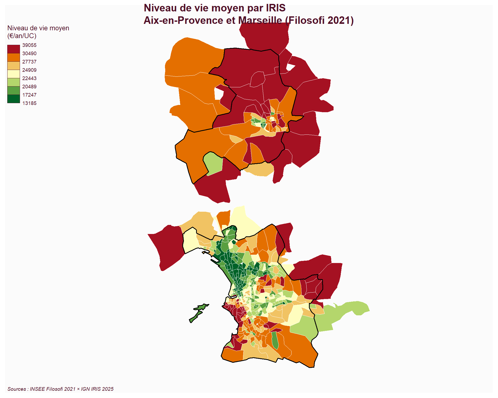

Voir le code
library(sf)
library(mapsf)
library(mapview)Cette page présente la jointure spatiale entre deux jeux de données géographiques de mailles différentes : les carreaux Filosofi 200m (INSEE) et les IRIS (IGN). L’objectif est de reconstituer un niveau de vie agrégé à l’échelle administrative IRIS, plus interprétable que les carreaux bruts pour la lecture des résultats.
──► centroïde de chaque carreau └─► st_intersects ◄──── iris.gpkg (487 IRIS) │ ├─► association carreau ↔︎ code_iris │ └─► agrégation par IRIS (moyenne pondérée par population) │ └─► iris_rev (niveau de vie par IRIS) │ └─► carte choroplèthe + comparaison Aix/Marseille## Note méthodologique
Pour chaque IRIS, le niveau de vie agrégé est calculé comme une moyenne pondérée par la population des carreaux qui le composent :
\[\text{niveau\_vie}_\text{IRIS} = \frac{\sum_\text{carreaux} \text{ind\_snv}}{\sum_\text{carreaux} \text{ind}}\]
Cette formulation reconstitue le niveau de vie moyen des habitants de l’IRIS à partir de la somme des niveaux de vie winsorisés (variable ind_snv INSEE) divisée par la somme des individus (ind). Elle est plus rigoureuse qu’une simple médiane des niveaux de vie par carreau, qui ignorerait le poids démographique de chaque carreau.
Pour éviter les pertes de carreaux qui se trouvent à cheval sur deux IRIS (problème observé avec st_within), on utilise les centroïdes des carreaux comme points de référence pour la jointure spatiale. Chaque carreau est ainsi rattaché à l’IRIS qui contient son centre.
# Calculer les centroïdes des carreaux pour la jointure
filosofi_pt <- st_centroid(filosofi)
# Joindre chaque centroïde de carreau à l'IRIS qui le contient
join <- st_join(
filosofi_pt[, c("ind", "ind_snv", "niveau_vie")],
iris[, c("code_iris", "nom_iris", "nom_commune")],
join = st_within
)
cat("Carreaux total :", nrow(join), "\n")Carreaux total : 5681 Carreaux joints à un IRIS: 5665 Carreaux sans IRIS : 16 Taux de jointure réussie : 99.7 %# Préparer les données : on garde les carreaux joints avec ind > 0
df <- st_drop_geometry(join)
df <- df[!is.na(df$code_iris) & !is.na(df$ind_snv) & !is.na(df$ind) & df$ind > 0, ]
# Agrégation : moyenne pondérée par la population
agg_iris <- aggregate(
cbind(ind_snv, ind) ~ code_iris,
data = df,
FUN = sum,
na.rm = TRUE
)
agg_iris$niveau_vie_iris <- agg_iris$ind_snv / agg_iris$ind
# Fusionner avec les géométries IRIS
iris_rev <- merge(iris,
agg_iris[, c("code_iris", "ind", "niveau_vie_iris")],
by = "code_iris")
cat("IRIS avec données de revenu :", nrow(iris_rev), "/", nrow(iris), "\n\n")IRIS avec données de revenu : 471 / 487 Statistiques du niveau de vie agrégé par IRIS : Min. 1st Qu. Median Mean 3rd Qu. Max.
13185 19956 23410 23944 28359 39055 mf_map(communes, col = "grey95", border = "grey50")
mf_map(
iris_rev,
type = "choro",
var = "niveau_vie_iris",
breaks = "quantile",
nbreaks = 7,
pal = "RdYlGn",
border = "white",
lwd = 0.3,
leg_title = "Niveau de vie moyen\n(€/an/UC)",
leg_val_rnd = 0,
add = TRUE
)
mf_map(communes, col = NA, border = "black", lwd = 1.5, add = TRUE)
mf_title("Niveau de vie moyen par IRIS\nAix-en-Provence et Marseille (Filosofi 2021)")
mf_credits("Sources : INSEE Filosofi 2021 × IGN IRIS 2025")
Étant donné que Marseille est divisée en arrondissements dans la table IRIS (Marseille 1er Arrondissement, etc.), on regroupe ici tous les IRIS marseillais sous une seule étiquette pour faciliter la comparaison avec Aix-en-Provence.
# Créer une étiquette de ville simplifiée
iris_rev$ville <- ifelse(
grepl("Marseille", iris_rev$nom_commune),
"Marseille",
iris_rev$nom_commune
)
# Statistiques par ville
stats_par_ville <- tapply(iris_rev$niveau_vie_iris, iris_rev$ville, function(x) {
c(N = length(x),
Minimum = round(min(x, na.rm=TRUE)),
Q1 = round(quantile(x, 0.25, na.rm=TRUE)),
Médiane = round(median(x, na.rm=TRUE)),
Moyenne = round(mean(x, na.rm=TRUE)),
Q3 = round(quantile(x, 0.75, na.rm=TRUE)),
Maximum = round(max(x, na.rm=TRUE)))
})
print(stats_par_ville)$`Aix-en-Provence`
N Minimum Q1.25% Médiane Moyenne Q3.75% Maximum
54 15758 24656 28255 27223 30788 35965
$Allauch
N Minimum Q1.25% Médiane Moyenne Q3.75% Maximum
2 23892 25916 27941 27941 29965 31990
$Aubagne
N Minimum Q1.25% Médiane Moyenne Q3.75% Maximum
2 21555 23958 26360 26360 28762 31164
$`Bouc-Bel-Air`
N Minimum Q1.25% Médiane Moyenne Q3.75% Maximum
1 27571 27571 27571 27571 27571 27571
$Cabriès
N Minimum Q1.25% Médiane Moyenne Q3.75% Maximum
2 20787 24549 28312 28312 32074 35836
$Éguilles
N Minimum Q1.25% Médiane Moyenne Q3.75% Maximum
2 29533 30043 30553 30553 31063 31574
$Gardanne
N Minimum Q1.25% Médiane Moyenne Q3.75% Maximum
1 31098 31098 31098 31098 31098 31098
$`La Penne-sur-Huveaune`
N Minimum Q1.25% Médiane Moyenne Q3.75% Maximum
3 21314 23157 24999 26382 28916 32832
$`Le Puy-Sainte-Réparade`
N Minimum Q1.25% Médiane Moyenne Q3.75% Maximum
1 34876 34876 34876 34876 34876 34876
$`Le Rove`
N Minimum Q1.25% Médiane Moyenne Q3.75% Maximum
1 34868 34868 34868 34868 34868 34868
$`Le Tholonet`
N Minimum Q1.25% Médiane Moyenne Q3.75% Maximum
1 35769 35769 35769 35769 35769 35769
$`Les Pennes-Mirabeau`
N Minimum Q1.25% Médiane Moyenne Q3.75% Maximum
3 22733 23408 24083 24791 25820 27556
$Marseille
N Minimum Q1.25% Médiane Moyenne Q3.75% Maximum
386 13185 19338 22507 23041 27030 39055
$Meyreuil
N Minimum Q1.25% Médiane Moyenne Q3.75% Maximum
1 37117 37117 37117 37117 37117 37117
$`Plan-de-Cuques`
N Minimum Q1.25% Médiane Moyenne Q3.75% Maximum
3 27733 28762 29791 30153 31362 32934
$`Saint-Cannat`
N Minimum Q1.25% Médiane Moyenne Q3.75% Maximum
1 29581 29581 29581 29581 29581 29581
$`Saint-Marc-Jaumegarde`
N Minimum Q1.25% Médiane Moyenne Q3.75% Maximum
1 38255 38255 38255 38255 38255 38255
$`Septèmes-les-Vallons`
N Minimum Q1.25% Médiane Moyenne Q3.75% Maximum
3 22607 23563 24519 25702 27250 29980
$Venelles
N Minimum Q1.25% Médiane Moyenne Q3.75% Maximum
2 31095 32382 33669 33669 34956 36243
$Ventabren
N Minimum Q1.25% Médiane Moyenne Q3.75% Maximum
1 30011 30011 30011 30011 30011 30011 La carte ci-dessous permet d’explorer le niveau de vie agrégé à l’échelle de chaque IRIS de manière dynamique. Cliquez sur un IRIS pour voir son code, son nom, sa commune et son niveau de vie moyen exact.
iris_interactif <- iris_rev[, c("code_iris", "nom_iris", "nom_commune", "niveau_vie_iris")]
iris_interactif$niveau_vie_iris <- round(iris_interactif$niveau_vie_iris)
mapview(iris_interactif,
zcol = "niveau_vie_iris",
layer.name = "Niveau de vie moyen par IRIS (€/an/UC)",
col.regions = hcl.colors(7, "RdYlGn"),
alpha.regions = 0.7,
lwd = 0.5)Constats principaux issus de la jointure :
Aix est globalement plus aisée : médiane à 28 255 €/an/UC contre 22 507 € à Marseille, soit un écart de +25,5 % en faveur d’Aix-en-Provence.
Aix est plus homogène : 75 % des IRIS d’Aix se situent entre 24 656 € (Q1) et 30 788 € (Q3), soit un intervalle interquartile de 6 132 €. À Marseille, l’intervalle interquartile est de 7 692 € (entre 19 338 € et 27 030 €), soit 25 % plus large.
Marseille est plus polarisée : son maximum (39 055 €) est même supérieur à celui d’Aix (35 965 €). Cela révèle l’existence d’IRIS très aisés à Marseille (notamment dans les 7ᵉ et 8ᵉ arrondissements — Endoume, Bonneveine, le Roucas-Blanc), tout en coexistant avec des IRIS très pauvres (13 185 €) localisés dans les quartiers nord.
L’écart-type plus élevé à Marseille (5 531 € contre 5 007 € à Aix) confirme statistiquement la fragmentation socio-spatiale marseillaise.
La jointure spatiale entre les 5 681 carreaux Filosofi 2021 et les 447 IRIS 2025 des deux communes (taux de réussite de la jointure : 99,7 %) a permis de calculer un niveau de vie moyen agrégé pour chaque IRIS, par moyenne pondérée par la population. Les statistiques descriptives confirment quantitativement la différence majeure entre les deux villes : Aix-en-Provence présente des IRIS aux niveaux de vie globalement plus élevés et plus homogènes, tandis que Marseille affiche une forte hétérogénéité interne, avec des IRIS très pauvres (notamment dans les arrondissements nord) coexistant avec des IRIS aisés (arrondissements sud, 7ᵉ et 8ᵉ). Cette structure spatiale fragmentée à Marseille, opposée à l’homogénéité aisée d’Aix, sera mise en perspective dans la conclusion générale du site.